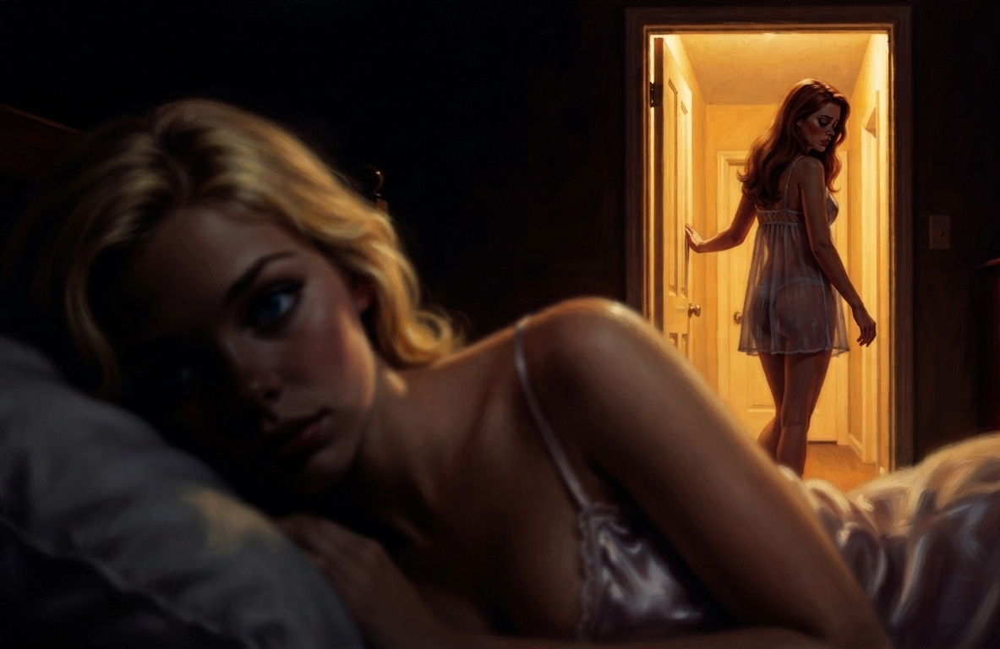

She came back slowly, surfacing as if through warm syrup.
The sun was the first thing, the warmth of it on bare skin. The light had gone gold and long. She felt the rock of water somewhere under her, and a high thin singing in her ears that resolved, eventually, into the chlorine smell and the low warm music still going across the deck. She was on the raft. She was on her back on the raft on the lit blue water with an empty glass tipped over on her stomach, and her head felt — wrong. Scattered. Like a deck of cards thrown up into the air and not yet landed, every thought reaching for another thought and the other thought not where it should be, sliding away, the whole inside of her skull loose and rattling and bright and foggy all at once, a fog with the sun shining straight through it.
She blinked up at the hard blue sky and tried to gather herself and couldn't quite find the edges of herself to gather. She reached for what had happened to her and the reaching went slow, went through layers, her thoughts arriving a half-beat late, as if she were calling them up from another room and they had to come down a long hall to reach her. Thinking had cost nothing this morning. Now it cost something, a slow toll charged on every thought before it would come, and the thoughts that came easiest, came bright and unbidden and quick, were not the ones she was reaching for.
The others were scattered around the deck. They'd all gone down where they were, she understood, dropped at once wherever they stood or sat or floated, and now they were coming up the way she was, slow, lifting heads, blinking at the gold light. The auburn-haired one was nearest, a few feet off, stirring on the lounge chair, hair like a red curtain fallen across her face.
Her.
The word arrived before she could stop it, easy, automatic. She reached back to correct it. She knew the auburn-haired girl used to be someone else. A boy. She knew it the way you know a thing you've been told and not a thing you remember. But when she tried to put it together, tried to look at the auburn-haired girl and see the boy that the fact insisted had been there, her mind slid off it, refused the grip, the way a hand slides off wet chrome. She tried again, slow, deliberate, pushing the right word up the long hall toward the face in front of her. The word wouldn't seat. She put him against the auburn-haired girl and it slid off and a small wave of something unpleasant came up behind it, a faint physical no, a turning-away, and she stopped trying.
And she realized she didn't know the girl's name.
She knew the auburn-haired girl, knew her the way you know someone you've been locked in a room with for weeks, and she reached for the name to go with all of that and the name was — gone. Not forgotten, not on the tip of her tongue. Gone. A clean-edged absence where the name had been, the socket smooth and empty, as if a name had never been there at all. She reached again and got nothing again and a small dread opened under the fog.
And then, the way you turn from a strange room back to your own hands, her scattered mind came back around to herself. To the body on the raft. To the she of it, lying there in the lilac scraps with the sun on it, and she thought, she? No that's not right, I am a —
The nausea closed over the words like a hand over a mouth.
It rose out of nowhere, out of the exact place the thought had pointed, a deep interior revolt, her whole body finding the idea and trying to expel it at once, her stomach clenching, her throat closing, a wave of cold sweat over the warm skin, the same sick churning she'd felt once before in another room over another thing her body refused. I am a m— and she couldn't get to the end of the word, the thought itself made her gorge rise, the m of it sitting in her mind like spoiled food, and she flinched off it, hard, instinctive, the way you snatch your hand off a stove, and the nausea began, mercifully, to recede the instant she stopped reaching for it.
She knew what she'd been. The memory held, clean and intact, she could look straight at the man she'd been and know him, but the instant she tried to stand inside it in the present, to say am where the truth was was, her throat shut and her gut rolled and the whole idea recoiled from her as something spoiled, gone bad, that her body had decided she must never touch again.
She reached for her name.
She knew she had one. That was the thing in the first instant, the thing that should have made it survivable: she knew. There had been a name, her real name, the one her mother called up the stairs, what she's answered to for 19 years, the one she'd whispered to Mireille in the studio. She reached for it the way you reach for your own face in the dark, and she got the first sound of it, got Ch —
— and the same hand closed over the same mouth.
The nausea, again, total, the deck swinging under her. Ch— and it recoiled, her own name, spoiled, untouchable, something her body rose against before she could come near it. She stopped pushing. She lay on the raft breathing carefully around the place where the name was, knowing it was there, knowing it was hers, knowing she would be ill if she went one syllable further in.
{kind=link}
She didn't know who she was.
She knew she was someone. She was still here, still the same self that had lain on this raft an hour ago and enjoyed the sun, still the same one watching the auburn-haired girl wake up — nobody had scooped her out and poured someone new in, she could feel that much, she was continuous, she was her. But the doors out of her — backward, to the boy, to the name — were all of them slammed and locked and wired to make her sick if she so much as rattled the handle. She was a self with no behind. A person sealed into the present tense.
She got herself upright on the raft, water sloshing, the empty glass rolling off into the pool, and she turned her scattered, foggy, frightened head toward the deck and found the dark suit standing there in the sun, watching her surface with that flat clinical interest, and she heard her own bright voice come out of her thin and shaking and small.
"What did you do to me."
Vane looked, for the first time she could remember, almost pleased.
"Nothing I haven't done before," he said. "A more refined version of it. You may not remember in your current state, but weeks ago, one of you went by a nickname, and I made that nickname intolerable. A simple aversion." He tucked the tablet back under his arm, mopping his forehead again, plainly eager to be out of the sun and willing to spend one more minute in it to explain his own cleverness. "We can't put a thought into your head, but we can make a path easy or make a path sick. Reward on one road, aversion on another. The mind does the rest itself, walks the easy road every time because the easy road feels like its own idea."
He paused, and the small dry pleasure deepened.
"The weeks since the nickname test we've been collecting data and refining the process, and what you've been given is an improved version. We still can't put a concept into a head from nothing, but we can prepare a mind to accept what it's told. To take a new label and seat it, and to reject the old one that's in the way. Which" — he looked around the deck, at the six of them coming to in the water and on the loungers, scattered and foggy and sick and afraid — "is precisely the state you're all in right now. Reaching for your old names and your old selves and finding only that they make you ill. The ground is cleared. You're ready to be told."
She watched him turn, on the bright hot deck, to the auburn-haired girl, who had got herself sitting upright on the lounger with her arms wrapped around her knees, the green eyes wide and wary.
"Hello, Hal," Vane said.
The auburn-haired girl flinched like she'd been struck. Her whole face screwed shut and she got out, through her teeth, one word: "Stop."
"No?" Vane said, mild, watching her. "Then how about — Hayleigh."
And the girl went still.
She watched it happen from the raft, watched the auburn-haired girl go absolutely motionless, the wince draining out of her face and something else coming in behind it, a slackness, a settling, the name landing somewhere deep and seating, clicking home in a socket that an hour of sun and alcohol and a green bloom across the scalp had been hollowed out to receive it. The girl's mouth moved. "No," she said, faint, automatic, already too late, already losing, "no, that's not —" but the no had nothing under it, the name was already in, already true, already the thing she'd answer to, and she sat there on the lounger in the tiny black bikini with her auburn hair drying in the sun and accepted it against her own will, Hayleigh.
And on the raft, she realized that the empty socket where the auburn haired girl's name had been an hour ago filled itself with the new name and would not be emptied again.
Hayleigh. She tried it, on the raft, looking at the girl. It fit. God help them both, it fit, the only name her mind would now hold for the auburn-haired girl, sweet and Southern and pretty, and she could no more get back the old one than Hayleigh could refuse the new.
Vane moved on around the deck, unhurried, and did it to each of them.
He went to the freckled girl sitting beside the ladder in the wine-red suit and said Peter and the girl winced, the flat Boston please stop coming up out of her, and then Vane said Piper and the girl went quiet and the name went in. He went to the small Asian one on the steps in the delicate white suit, the black hair drying glossy, and the dark eyes flooded with panic at the name Austin and then went still and accepting at Autumn. He said Porter at the composed one sitting at the pool's edge and watched the cool gray eyes flinch, and then said Portia, and the composure came back down over a self that had just been quietly renamed underneath it. He said Jay at the one behind the little bar with the great cloud of hair, and got the wince, and then Jade, and watched it seat.
One by one, around the bright pool, in the warm afternoon sun, he handed each of them the name they would carry for the rest of their lives, and one by one their old names rose up to be refused and sank back down behind a wall of nausea, and the new ones clicked home, and not one of them could stop a single one of them from landing.
And then he came back around to the raft, to her, last, the one he'd left for the end, the one who still had no name even in her own foggy frightened head, who had been only she since she woke because there was nothing else left to call herself.
He looked down at her on the lit blue water, and the dry pleasure was almost a smile now.
"And last but not least," Vane said. "Our Carly."
It settled into her mind like a key turning in a lock.
That was the only way she could ever have described it. Not pushed in, not forced, fitted, a shape sliding home into a space cut precisely to receive it, every ward and pin aligning at once, the bolt drawing back, the thing clicking open and shut in the same motion. Carly. The empty socket where her own name should be, the smooth-walled absence she'd torn her stomach trying to reach into a minute ago, flooded warm and full all at once, and the warmth had a name in it now, and the name was hers, and it was Carly, and the moment it seated she could not for her life have told you it hadn't always been there.
She reached, by reflex, the old reflex, back past it toward the Ch— she'd choked on, and the nausea waited there exactly as before — but it was a closed door at the end of a hall she no longer had any reason to walk down, because the room she was standing in had a name on it now, and the name was Carly, warm and bright and gushing and hers, and some traitor-deep part of her that had seen this word once before on a blueprint through a sedative fog, a lifetime ago, a name printed beside a diagram of a blonde, settled into it with something that felt, horribly, like relief.
She was Carly.
She lay on the raft in the lilac bikini in the sun and she was Carly, and she could not get back the person who had been here an hour ago by any road that didn't make her sick, and she was Carly, and she always had been, and she never had been, and both of those were true and seated in the same warm-walled room behind her sternum where the want lived, and there was no part of her mind she could go to where it wasn't.
"Well then," Vane said, turning to leave. "I think we're done here. Have a good evening, ladies."
Piper stopped him before he could take two steps.
She'd steadied herself by hugging her arms around the pool ladder and was sitting on the edge with her freckled legs in the water, the wine-red suit dark, and she had a hand pressed flat to the side of her own head, pressing in, the way you press on a bruise to find out how bad it is. Her face had gone past the shock of the name into something more bewildered.
"There's — somethin' else," she said, looking up at Vane. "Names aside. Somethin' in my head's different. It's all —" she moved the flat hand in a scattering gesture by her temple, the same gesture Carly's own scattered mind kept wanting to make "— it won't sit still. I can't — I keep reachin' for a thing an' it's not wheah I left it. Everythin's loose. What did you do up theah."
"Ah, yes. I calibrated things a bit," Vane said over his shoulder before turning to face them. "All of you, to your new selves. You in particular had a great deal of surplus capacity, Piper — far more than your role requires. Processing you simply won't be using anymore. It does no good idling; an idle mind that powerful tends to make trouble." He paused at the corridor mouth, in the first cool shadow, and looked back at her. "So I've seen to it that your thoughts don't gather well enough to reach it. Tuned the reactive layer to arrive ahead of the deliberative one. Latency calibration. The capacity's still there. You just can't get to it. You'll find you don't miss it, in time. The same for our Carly, and our Hayleigh — the cleverest of you got the heaviest touch, since you'd the most you didn't need. The others, to a lesser degree."
And Carly, lying on the raft, understood at last what the fog was. The scatter. The cards thrown up and never landing, the thought sliding off the thought, the whole loose rattling brightness she'd woken into and blamed on the sun and the drink. It wasn't the sun. It was this.
That was how the voice — the voice had been Carly before she'd been Carly — had become her. The Carly voice inside her had never won an argument — she'd never had to. She'd just arrived first. The slow true thought came down the long hall and the bright reactive one was already standing in the room, every time, already speaking in her own voice, already mistaken for her. He hadn't put a girl in. He'd made sure the girl was always faster.
Piper made a sound. It started low and broke in the middle, and she folded forward over her own knees at the pool's edge, the freckled shoulders curling in, and what came out of her wasn't a sob exactly, it was worse than a sob, it was a kind of disbelieving animal grief.
"No," she said, into her knees, the flat voice cracking. "No, you can't — that's — that's the one thing, that's me, that's the one thing I had in heah, I'm not — you can't make me —" she couldn't finish it, the word she couldn't bring herself to say, dumb, stupid, less, and Carly understood, watching her come apart, exactly what it was costing her, because before she had been the smart one. Whatever else this place had taken from her, her body, her voice, her name, she'd had that, the quick mind underneath, the one thing the hair and the heels and the dresses couldn't touch, and Vane had just reached in past all of it and pulled the pin on the only thing she'd had left to be, and left her sitting at the edge of a swimming pool in a wine-red bikini, scattered, grieving, Piper, with the surplus brilliance still locked inside her skull where she'd never reach it again.
Connie was already up out of her chair and crossing to her, the magazine forgotten, real distress on the warm face, and she got down beside Piper at the pool's edge and put an arm around the dripping freckled shoulders and gathered her in.
"There, now," Connie said, soft, rocking her a little. "There. It's all right, my love. It's all right. You don't need any of that, do you see — not for who you're going to be. That's the kindness of it. You'll spend your days out on the lacrosse field, in the sun, with the girls, not shut up alone in the stacks with your books. You'll be lighter without it." She smoothed the wet auburn hair back off Piper's face the way you'd soothe a child out of a nightmare. "Piper doesn't brood, sweetheart. Piper plays."
And Piper, shaking, in the circle of her arm, didn't have the mind anymore to argue with it.
The day was over. Whatever it had been — the warmth, the music, the slow blue drift, the one good afternoon they'd been ambushed into having — it was finished, lying in pieces on the hot deck, and not one of the six of them could look at the pool now without it being the place where this had happened.
It was Jade who said it, finally, coming out from behind the little bar she'd hidden behind through all of it, the great cloud of her hair gone limp in the heat, her voice for once with no charm left in it at all. "Connie. Can we go in. Please. It's — " she looked up at the sky, where the hard blue had begun, at last, to go gold and long, the sun dropping toward the low wall on the far side of the deck, the wall none of them had it in them to look at anymore. "It's gettin' dark anyway. I just wanna go in."
And Connie, still crouched with her arm around Piper, looked up at the six of them stood scattered and dripping and renamed around her ruined lovely pool day, and her face crumpled with a sympathy that Carly could not tell, anymore, was real or built, and she said, "Of course, my darlings. Of course. You've had a long day. Let's get you in and dry and warm. Come along."
They filed back across the hot deck and into the cool of the unfamiliar corridor, six girls in six bright wet scraps of swimsuit, leaving wet footprints on the plain floor, the new ground that had felt like a discovery a few hours ago and felt now like nothing at all, like just another hallway in a house that was all hallways. Nobody signed. Nobody had the hands for it. They walked back through the locked door, into the lounge, down the soft carpeted halls, past the pressed-flower print, the whole familiar loop, and it had never felt smaller.
Carly walked in the middle of them with her wet hair dripping down her bare back and her arms wrapped around herself, and underneath the fog, underneath the scatter, one cold clear thing held its shape, the way one thing always managed to.
They had sworn it on the night of the show ponies, and again at the slumber party, hands on their chests, the one vow under all the others: they get the outside, they don't get this. There's a us in here they'll never reach. The outside they'd given up weeks ago, an inch at a time, the face and the voice and the walk and the shape. But the inside, the self, the thing behind the sternum? That they had held. That had been the whole of it. The single thing they'd refused to set down.
And they'd let Vane reach right in and move it. Not all of it. Carly was still here. But she was different. Renamed. Loosened at the root. Walled off from her own past behind a sickness she couldn't push through. Vane had done it in an afternoon, between drinks, with his thumb on a tablet, and that was the thing going silently around the six of them as they walked, no signing needed: not the loss itself, but the precedent of it. He'd moved the one thing they'd sworn he couldn't reach. How long before he could move the next, and the next, and the next, until there was nothing left.
They got ready for bed the way they did every night, except that nothing about it was the way it was every night.
Carly unclasped the lilac bikini at her back and the wet ruffled top came away and she dropped it on the floor and kicked it under her bed. She worked the bottoms down off the damp skin of her hips and stepped out of them and stood for a moment bare in the warm room with her wet hair down her back, and she reached for a nightgown and pulled it down over her head and let the cool satin fall over her. Around her the others were doing the same, slow, wordless.
The last lamp went off and the room went dark, the only light the dim glow of the fairy lights, and six girls lay down in six beds and pulled up their blankets and lay still in it.
And in the dark, with nothing left to do with her hands or her eyes, Carly felt the hunger arrive.
It had been there all along, she understood now, underneath the fog and the names and the long bright cruelty of the day, waiting for the room to go quiet enough that she'd have to feel it. She hadn't eaten. None of them had. Connie had brought the food out to the deck at lunch, the little sandwiches, the tray, and then Vane had come and the day had broken and the tray had been forgotten, and there had been no dinner, and now it was dark and her body was a clean scraped emptiness, hours deep, a hollow that had moved past the polite stage of hunger into something with teeth.
Her stomach turned over on itself, audible in the quiet. She lay still and tried to ignore it and the scattering wouldn't let her ignore it, the loosened mind unable to fix on anything else and so circling it, circling the emptiness, the hunger the one signal in all the fog that came in clear and sharp and would not scatter, would not soften, would not be reached past. She was so hungry. The thought had no grammar to it and needed none. She was so hungry and there was no food and she was so hungry.
And under the hunger, patient, the want stirred.
It came up the way it always came up, out of the warm-walled room behind her sternum, the room that had her name on it now, and it pointed, the way it always pointed, away from food and toward the one thing in the house that filled the hollow it lived in. There was food somewhere in this place, surely, there was a kitchen, there were sandwiches gone stale on a tray somewhere, but the want did not point at any of that. It pointed, sure of itself, weeks deep, worn into her swallow by swallow, at the canisters she knew were standing in their row in the dining room down the hall, warm in the cradle, waiting. This is what fills you, it said, in the dark, in the loose bright fog of her ruined mind, patient as it had ever been and meeting, now, almost nothing in the way. Not the food. This.
She lay there and held. By her fingernails, the way she'd held at the dinner table the first night, the way she'd held all the long weeks since, except that the thing she was holding with had been loosened at the root that very afternoon and her hands would not close all the way around it anymore. She knew there was a reason to refuse. She reached for it in the dark and it was there, she could feel the shape of it, the vow, the line, they get the outside, they don't get this — but she couldn't get her scattered mind to close on the why of it, couldn't hold the reason steady against the simple warm physical yes rising up out of the oldest part of her, and the holding was no longer a clean cold refusal but a slow losing grip on something greased and sliding.
The dark was full of the sound of six people not sleeping. It was Hayleigh who broke first.
Carly heard it before she understood it. The rustle of blankets thrown back, the soft give of a mattress as weight came off it, feet on the floor. She lifted her head off the pillow and in the gray dimness she could see Hayleigh sitting up on the edge of her bed, the auburn hair a dark mass against the wall, her shoulders curled in, her hands pressed flat over her own face. And then she heard her, talking to the part of herself that had held the line for six weeks and couldn't hold it one hour longer.
"Ah cain't," Hayleigh said, sobbing. "Ah'm sorry. Ah cain't do it anymore. Ah'm so hungry. Ah'm just — Ah'm so hungry, and Ah cain't."
Nobody answered for a moment. Then Jade's voice came, soft, from across the room, with no judgment in it at all, only the bone-deep tiredness of someone watching their own near future walk out the door ahead of them. "S'alright, Hayleigh," she said. "Go on, babes. It's alright. Go on."
And Hayleigh stood up in the dark in her nightgown, and stood there one more second, and then crossed the room and let herself out the door into the lit hall, going where they all knew she was going, to the dining room, to the row of canisters in the cradle, and nobody stopped her, and nobody watched, and the door closed soft behind her.
{kind=link}

The room lay there in the dark with the fact of it.
Carly lay on her back and stared up at a ceiling she couldn't see and felt the line she'd sworn to hold begin, somewhere down its length, to give. Not snap. Give, the way a rope gives strand by strand under a weight, the first strand gone now, Hayleigh's strand, and the rest of them lying in the dark feeling the load come onto what was left.
It went the way Vane had clearly known it would go, the way he'd spent his whole bright cruel afternoon engineering it to go. Hayleigh came back after a moment — Carly heard the door, the soft feet, the give of the mattress — and lay back down, and Carly tried and failed to avoid watching her through the dim.
One glance, sidelong, and there she was, the bombshell body they'd built her lying back against the pillows in lace and silk, the auburn spilled out around her, the dispenser held up in both hands and fitted to her lips, and as he watched she did the thing her body had been trained to do, the thing all their bodies had been trained to do under the masks where no one could see it. Carly saw her jaw release, saw her mouth drop open and soft around the nozzle and take it, take the length of it sliding back over her tongue, her lips closing around the girth of it, her cheeks hollowing.
And then she worked at it. Hayleigh's cheeks pulled and her throat flexed and nothing came, and she drew on it again, harder, a long working suck that hollowed her face and got her nothing, and again, her brow creasing, the nightie rising and falling with the effort of it, her whole body bent to coaxing the thing in her mouth, and Carly understood with a cold lurch that this was designed, that some choice had been made in a lab to make the body labor at it before the reward came, to put the wanting and the working right up against each other so the one fed the other, so that by the time it broke she'd be straining for it.
And then it broke for her. Carly saw the moment it gave — saw her body know it half a second before it happened, the bracing — and then it flooded, the Goo coming up the length of it all at once in a rush she had to swallow against, fast and thick and more than a mouthful, and her throat opened and took it down in a series of hard working gulps, swallow chasing swallow, her hands clenching on the warm shape of it, her breasts heaving, all of her given over to taking the flood as fast as it came. And her eyes —
Her eyes fell shut, and then they they fluttered, and rolled, the green eyes going up and back under the fluttering lids, the whole face going slack around the nozzle into something past relief, past pleasure, a release so total it looked almost like dying, and a long shaking breath went out of her nose, and her body sank an inch deeper into the bed as the wanting that had been upright in her all day was finally answered, the flood going down into her and the green going off in her head at the same instant, the one swallowed and the other detonating, filling her as fast as she could take it.
Carly realized she'd been staring. Glancing around the room, she realized that another bed had emptied. And after a few minutes, another rustle of blankets. Another set of bare feet. The soft click of the door. Carly didn't lift her head to see who. She lay in the dark and listened to it happen, one of them and then, a while later, another, each one's surrender unbinding the next, the line they'd sworn to hold coming apart in the dark one tired emptied person at a time, no drama to any of it, just the blankets and the bare feet and the door and the long wait and then the blankets and the bare feet and the door again.
Carly wasn't the last. She held a little longer than some, and not as long as others, lying in the dark with the hunger sharp and the want patient and the reason dissolving in her loosened hands, and somewhere in the long dark waiting it stopped being a thing she was deciding and became a thing that was simply going to happen, the way everything in this house was simply going to happen, the heel or the worse. She put the blankets back. She set her feet on the floor. She stood up in the dark in her nightgown the way Hayleigh had, and the room did not stop her, and she went out into the dim hall and down it to the dining room where the canisters stood warm in their cradle in the low light, and she took one off it, and the weight of it was familiar in her hand, and she carried it back.
She told herself, with the loose front of her scattered mind, that it was solidarity, that she was doing it with them and not against them, that to be the one who held the line while the others fell was its own kind of cruelty. That was the lie, and she knew even then it was the lie. She did it because she was so hungry, and because she was tired past the floor of tired, and because the mental labor of holding one hard thing steady against the warm easy pull had gone, that afternoon, from difficult to nearly impossible, the scattering having taken from her the one grip that had ever held the line. It was easier. That was the whole of it, in the end, the thing Connie had promised on the first night and the thing Vane had spent the afternoon making certain of: that there would come a point where stopping cost less than holding on, and that every one of them would reach it.
She got back into her bed and sat up against the headboard in the dim, legs tucked under her with the grotesque canister in her lap, her back half-turned to the room the way the others' had been, the small mercy of not being watched. And here is what it was, because there was no more pretending it was anything else, not with the want this loud: it was a cock. That was the shape they had made. Soft pale silicone, warm from the cradle, the rounded head of it and the heavy length of it, the exact thing that had been dissolved off each of them a half-millimeter at a time inside the briefs, handed back now not between her legs but into her hands, to be put in her mouth. This was it, this was the plan, the whole long apparatus of the nozzle and the quarter-twist and the trained-open jaw had been a rehearsal the entire time, weeks of practice in the dark for this, for a girl on the edge of a bed with a cock in her hands bringing it up to her mouth. She knew, holding it, exactly what she was about to do and exactly what it was made to look like her doing, and she did it anyway, because the want did not care in the slightest what the shape was, the want only knew what filled it.
Her body knew the rest. That was the worst part and the truest, that she didn't have to decide any of the mechanics. Her hands brought the soft head of it up to her lips. Her jaw released, her lips found the rounded head and closed around it and took it in, the warm length sliding back over her trained tongue to the place she'd long since stopped gagging at, and she heard herself make the first soft pull, cheeks hollowing, tongue working, and she understood with cold and total clarity that she looked exactly like what Cade had built her to be, a pretty blonde girl on her knees, mouth full of dick, and that the people who designed her had known she would end up here doing precisely this and had laughed about her name while they planned it.
Then the Goo released, warm and rich and finally, flooding across the trained tongue and down the trained throat, and the circuits answered.
The green came, and it was not the small reward. It was the whole vault thrown open at once. Weeks of refusal, weeks of the want carried and denied and held by her fingernails, and the reward that had spent all those weeks doling itself out in thin warm threads now poured through her entire in a single flood, green spilling out from the crown and down through the whole cage of her skull, into her chest, into her belly, lower, a warmth with no rim and no edge, spreading and spreading and not stopping. It was relief and it was reward and it was, undeniably, pleasure. A physical wave of good that broke over every nerve the house had spent months tuning, and they all sang the one clean note they'd been built to sing.
A sound came out of her around the soft length in her mouth that she had never made and would have died to have heard, the exact helpless unspooling moan she'd just heard out of Hayleigh, and now she understood it from the inside, now she knew why it hadn't been a sound of shame. The want that had roared in her for hours folded down into a satisfaction the size of the whole sky. The fog warmed and went kind. The dread went quiet. And Carly kneeled on the edge of her bed in the dim with a cock in her mouth and the Goo flooding her and her eyes streaming and rode the green all the way up to the top, horrified, undone, debased, and — there was no lying in here, not to herself, not anymore — happier in her body than she had been since the day they took her.
She pulled until it was empty. The body wrung the last of it out the way it had wrung out the pouches, and the final swallow brought a last hot pulse of green, the small bright wage for finishing clean, and she lay back on the coverlet shaking with the leftover bliss of it.
She was finally full, completely sated. And the worst of it, the thing she would have to live with after, was that the fighting had stopped. The long ache of holding the line let go all at once, every strand of it, and what flooded into the space it left was not shame — that would come, that would come in the morning and every morning after — but a low animal quiet, a body that had wanted one thing for weeks and been given it at last, and rested.
After, Carly lay in the dim with the empty canister set on the floor beside her bed and her wet hair drying cold on the pillow and the soft sounds of five other people having done the same thing settling slowly into silence around her.
Nobody signed. Nobody's hands came up off the blankets. There was nothing to say in any channel, and no one wanted to be the one to say it, to lift a hand and acknowledge out loud in the only language they had left what every one of them had just done. They'd sworn it on their chests. They don't get this. And then they'd handed it over, one tired domino at a time, on the worst day of all the bad days, and lain down in their beds with the warmth of it in them and said nothing.
And lying there in the warm aftermath she understood the shape of it, the whole shape, the thing Vane had built across one bright terrible afternoon. He hadn't loosened her mind and renamed her and emptied her old self in three separate cruelties. He'd done one thing in three motions, and the surrender in the dark tonight was the last of them, the one he'd been building toward.
Because refusing took a grip, and a grip took a mind that could close around a reason and hold it, and that was the exact thing he'd reached in and scattered. He hadn't made her want the Goo more than she had this morning. He'd made her unable to hold the thing that said no. The wanting did the rest, the way the easy road always did the rest, walked because it felt like her own idea. She hadn't broken tonight. She'd been disarmed that afternoon, on a raft, in the sun, and the breaking was just the part that showed.
{kind=link}
Carly lay still and let her loosened, scattered, fog-bright mind drift, and one cold clear thing in it held its shape against the drift.
She had to get out.
Not someday. Not when the language was good enough, not when the route was solved, not at the first clean chance. Those were the calculations of the person she'd woken up as that morning, and that person was already going. She had to get out now, the first wall and the first dark and the first second she could run, because she had felt, tonight, exactly how it ended if she stayed.
Because if she stayed, she'd take the Goo again tomorrow.
She knew it the way she knew the sun would come up over the low wall on the far side of the deck. Tonight she'd already crossed the line that made the next crossing easier, the way all of theirs had, the way every line in this house got crossed. Tomorrow would be easier than tonight, and every day after easier than that, the want deepening and the reason dissolving and the self loosening one scattered thread at a time, until some unmarked morning she would be someone else.
The only way not to suck a dick tomorrow was to not be here tomorrow.
She lay in the dark with the warmth of the thing she hadn't wanted to want still sitting in her like a stone she'd swallowed, and her wet hair cold on the pillow, and her name new and warm and seated where her old one used to be, and she stared up at the dim ceiling and held the one cold clear thing as hard as her loosened hands could hold anything. What it said had no grammar and needed none, the last of her saying it over the rising warm tide of everything else, except that it meant her life:
Get out. Soon. Before there's no one left to.